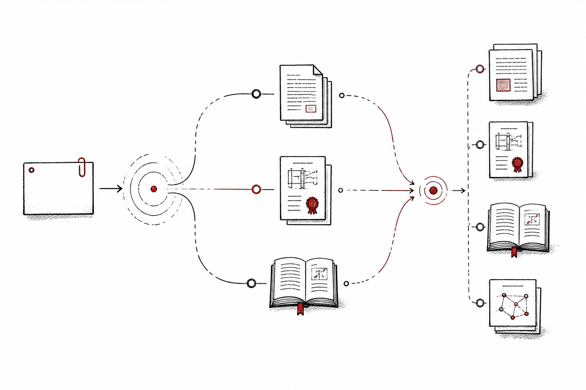
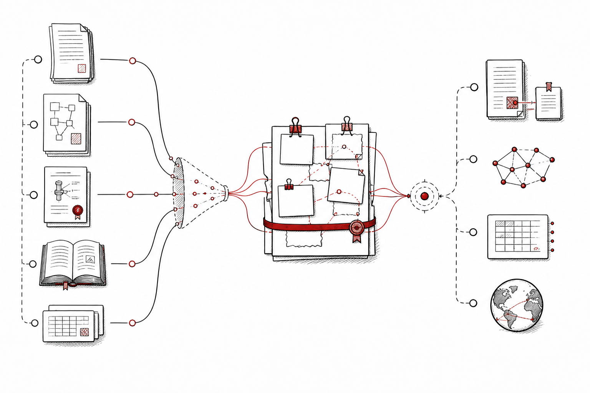
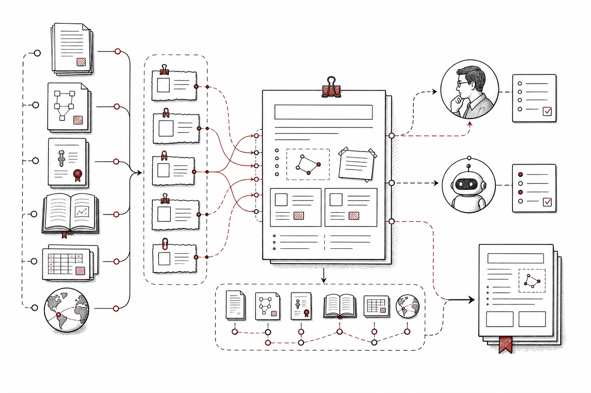
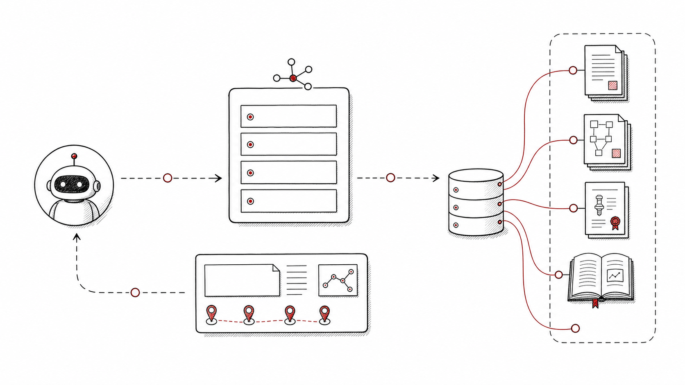

输入
研究问题、主题边界、方法关键词、领域约束，以及需要关注的论文、专利或图书类型。
SciBase 为 Auto-Research、Deep Research 和科研工作流 Agent 提供可检索、可引用、可追溯的知识对象。它把论文、专利、图书、证据片段和引用上下文转化为 Agent 可以稳定调用的上游知识层。

这个场景的核心不是替人“搜结果”，而是帮助 Agent 把研究问题拆成检索计划、证据集合、引用链路和可复核输出。
研究问题、主题边界、方法关键词、领域约束，以及需要关注的论文、专利或图书类型。
基于多源索引扩展检索路径，抽取 evidence spans、引用上下文、方法差异和来源质量信号。
面向 Agent 的 evidence pack、可追溯综述材料、候选引用、研究脉络和下一步追问方向。
每个方向都对应一个 Agent 可以直接调用或组合调用的任务单元。

Agent 先把自然语言问题转成可执行的检索策略：明确领域、对象、时间范围、关键方法、排除条件和可接受证据类型。

围绕同一问题聚合论文、专利、图书和数据集中的证据片段，并保留来源、位置、版本和质量信号，避免回答脱离出处。

Agent 可以基于证据包生成综述草稿，同时把结论、方法差异和争议点映射回原始片段，让人类评审时能快速复核。

上层 Agent 不需要自己拼装复杂数据处理链路，可以通过任务型 API 获取检索结果、证据包、引用上下文和后续追问建议。
Research Agent 更关注研究工作流，另外两个场景则分别面向技术查新与企业级知识挖掘。